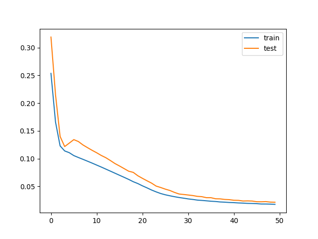
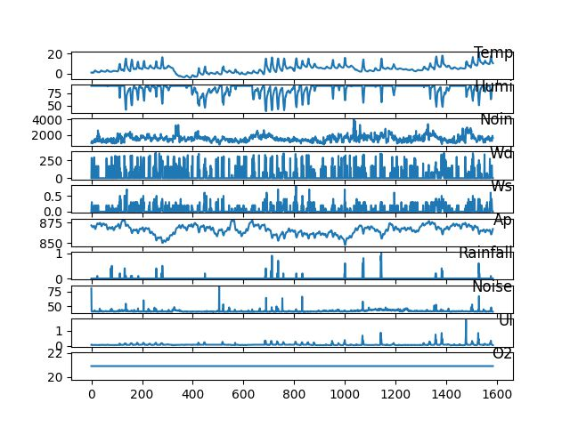

{% extends 'base.html' %}
<!--Bootstrap-Flask 提供的表单渲染宏通过内置的 bootstrap/form.html 模板导入， -->
{% from 'bootstrap/form.html' import render_form %} {% block content %}
<div class="grid-container">
  <!-- 在 HTML 中添加一个容器用于绘制图表 -->

  <ul id="main-content">
    <li><div id="main"></div></li>
    <li>
      <div></div>
    </li>
    <li>
      <div></div>
    </li>
    <li><div></div></li>
  </ul>
  <script>
    // 初始化 echarts 实例
    var myChart = echarts.init(document.getElementById("main"));
    // 定义其他自变量数据
    const tempData = [28, 26, 25, 27, 29, 28, 27, 26, 28, 30];
    const wdData = [176, 180, 184, 170, 172, 178, 182, 174, 178, 180];
    const wsData = [2.2, 3.1, 2.8, 3.5, 3.8, 3.0, 2.9, 2.7, 3.4, 3.2];
    const rainfallData = [0.2, 0.4, 0.3, 0.1, 0.3, 0.5, 0.4, 0.2, 0.6, 0.3];

    // 定义o2因变量数据
    const o2Data = [8.2, 7.6, 8.4, 7.8, 8.5, 8.1, 7.9, 8.3, 7.5, 8.0];

    var option = {
      title: {
        text: "Multi-variable Effects on O2",
      },
      tooltip: {
        trigger: "axis",
        formatter: "{b}: {c}",
      },
      legend: {
        data: ["temp", "wd", "ws", "rainfall"],
      },
      xAxis: {
        type: "category",
        data: o2Data.map(function (item, index) {
          return index + 1;
        }),
      },
      yAxis: {
        type: "value",
      },
      series: [
        {
          name: "temp",
          type: "line",
          data: tempData,
        },
        {
          name: "wd",
          type: "line",
          data: wdData,
        },
        {
          name: "ws",
          type: "line",
          data: wsData,
        },
        {
          name: "rainfall",
          type: "line",
          data: rainfallData,
        },
      ],
    };

    // 使用刚指定的配置项和数据显示图表
    myChart.setOption(option);
  </script>
</div>

{% endblock %}
